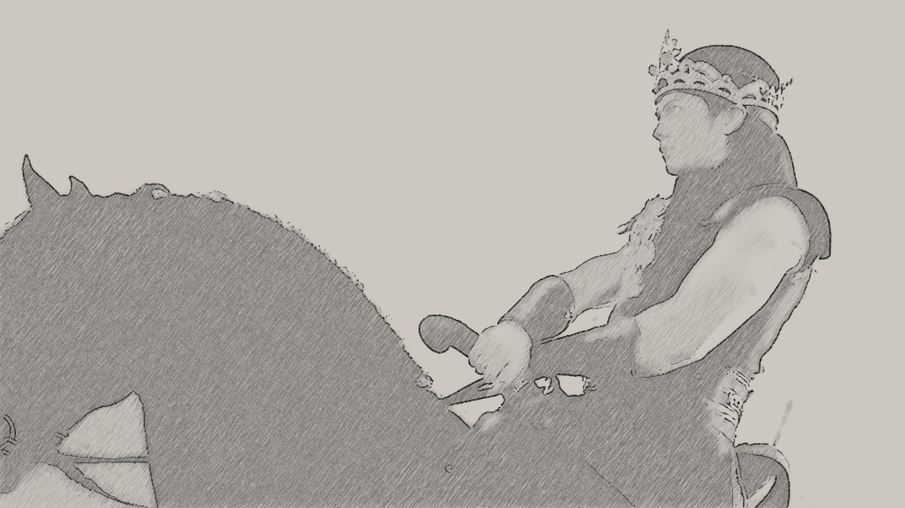
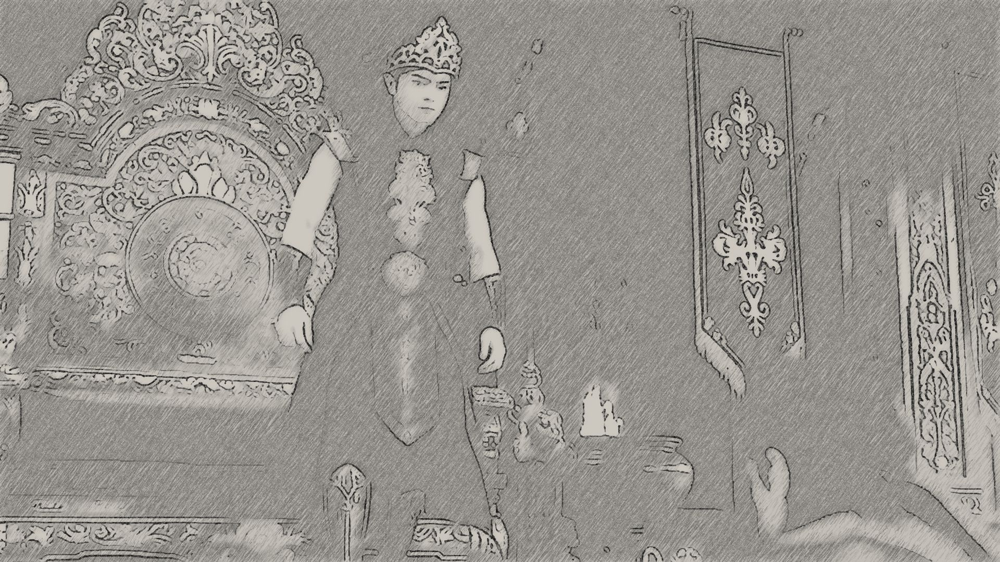
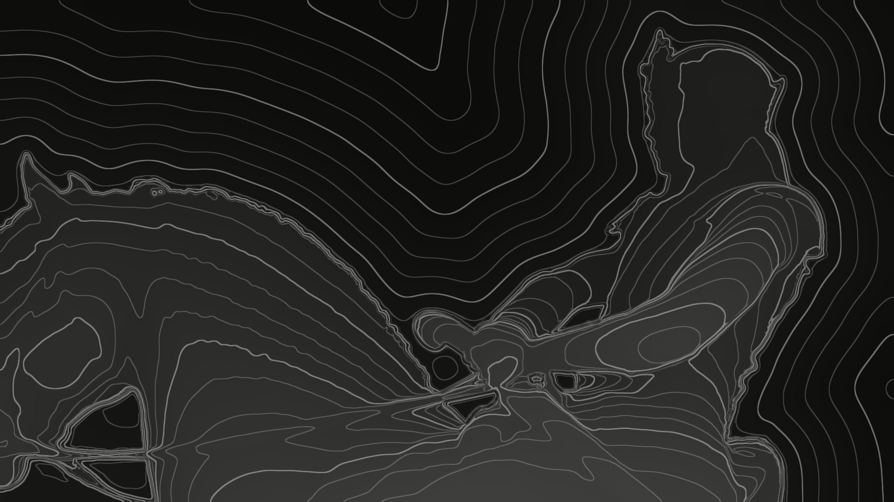

Pindai, varian
Bandingkan adegan dan gaya garis pindai. Setiap gambar memindai ulang terus menerus; arahkan kursor ke gambar untuk membuka lensa sketsa.

Raja muda di atas kuda saat senja. Tiga lapis kedalaman yang jelas: kuda, raja, langit. Pindai dengan grid titik merah, seperti di hero.

Ruang tahta yang gelap dan kaya ukiran. Lebih banyak detail untuk sketsa, tetapi lebih ramai dan ada api kecil di anglo.
Tanpa titik: hanya garis merah dan jaring kontur di depannya. Lebih tenang, lebih editorial, kurang terasa seperti alat pindai.

Mulai dari peta kedalaman yang gelap, bukan dari kertas sketsa. Tetap gelap dari awal sampai akhir, cocok bila judul harus menumpuk di atas gambar.
Adegan dari Jaka Tingkir Saga, peta kedalaman dibuat lokalBukan halaman publik